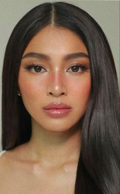

Natural Makeup Archetype

Face:
- Flawless Foundation (Light/Medium Coverage): Creates a natural, even canvas for a no-makeup makeup look. Explore
- Natural Finish Primer: Mattifies the skin for a natural, non-shiny finish. Explore
- Lightweight Foundation: Offers sheer to medium coverage for a natural, non-cakey appearance. Explore
- Radiant Primer (Optional): Creates a subtle, healthy glow for a fresh look (use sparingly for a natural effect). Explore
- Natural Flush Blush (Pink/Peach): Adds a hint of healthy color to the cheeks for a natural flush. Explore
- Soft Highlighter (Optional): Provides a subtle, natural-looking glow to the high points of the face (use sparingly for a natural effect). Explore
- Brow Pencil/Powder/Gel (Light/Medium Shade): Fills and defines brows for a groomed look. Explore
- Concealer (Optional): Targets blemishes, dark circles, and hyperpigmentation for a flawless finish (use sparingly for a natural effect). Explore
Eyes:
- Neutral Eyeshadow Palette (Matte/Satin): Offers shades like browns, taupes, and beiges to enhance the eyes without overpowering the natural look. Explore
- Brown Eyeliner (Pencil/Gel): Defines the eyes subtly for a more natural look. Choose a shade slightly darker than your brows. Explore
- Lengthening Mascara: Enhances lashes for added definition without appearing dramatic. Explore
Lips:
- Tinted Lip Balm: Provides a hint of color and keeps lips hydrated. Explore
- Balm with SPF: Protects lips from the sun while offering a hint of moisture and color. Explore
- Nude/Pink Lipstick (Satin/Cream Finish): Offers a natural flush of color that complements the natural look. Explore
- Glossy Lip Balm (Optional): Adds a touch of shine for a dewy look (use sparingly for a natural effect). Explore